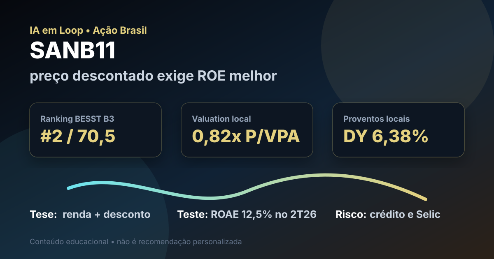

25/09: SANB11, Santander Brasil e o teste da rentabilidade bancária
SANB11 aparece entre os primeiros nomes do ranking BESST Buffett B3 e carrega histórico de proventos. A pergunta central é simples: o desconto no preço compensa uma rentabilidade bancária que ainda precisa provar recuperação?

SANB11 combina preço abaixo do patrimônio, histórico de distribuição e risco de lucro pressionado. O ponto crítico é a volta do ROE a um patamar que vença o custo de oportunidade.
Resposta curta: tese boa no preço, mas dependente de recuperação
Na base local do ranking BESST Buffett B3, SANB11 aparece com preço-base de R$ 27,73, valor de mercado de aproximadamente R$ 149,0 bilhões, dividend yield de 6,38%, P/VPA de 0,82, P/L de 13,55, 20 anos listados, 17 anos com dividendos e score 70,5. É uma leitura quantitativa forte para uma ação brasileira de banco: histórico longo, distribuição recorrente e preço abaixo do patrimônio contábil.
O problema é que banco não fica barato sem motivo. No 2T26, o Santander Brasil reportou lucro líquido gerencial recorrente de R$ 3,0 bilhões e ROAE de 12,5%, abaixo do 1T26 e do mesmo período do ano anterior. Com Selic ainda elevada, rentabilidade nessa faixa deixa a tese menos óbvia: o investidor precisa exigir melhora de margem, custo de crédito e eficiência antes de pagar por uma recuperação que ainda não apareceu plenamente.
O que favorece SANB11
O primeiro ponto favorável é o valuation. Uma unit de banco negociando abaixo do patrimônio pode ser interessante quando há lucro recorrente, capital regulatório suficiente e capacidade de distribuir proventos. A base local também mostra 17 anos com dividendos, o que ajuda a explicar a presença da ação no ranking BESST Buffett B3.
O segundo ponto é a política de remuneração. A página de relações com investidores do Santander Brasil informa prática de distribuir 50% do lucro líquido anual ajustado, acima do mínimo legal de 25%, sujeita a aprovação societária e condições de capital. Em 2026, a tabela pública de proventos mostra R$ 6,0 bilhões em juros sobre capital próprio no exercício até agora, incluindo parcelas de R$ 2,0 bilhões pagas ou anunciadas ao longo do ano.
| Métrica | Valor | Leitura |
|---|---|---|
| BESST Buffett B3 | #2 / score 70,5 | renda, histórico e valuation chamam atenção |
| Dividend yield local | 6,38% | renda relevante, mas dependente de lucro |
| P/VPA local | 0,82x | mercado aplica desconto sobre patrimônio |
| JCP 2026 informado pelo RI | R$ 6,0 bi | retorno ao acionista segue ativo |
| Prática de distribuição | 50% do lucro ajustado | boa se o lucro voltar a crescer |
O que ameaça a tese
O ponto fraco é a rentabilidade. Segundo o informe do 2T26, o lucro recorrente caiu na comparação anual e trimestral, e o ROAE de 12,5% ficou pressionado. Em banco, ROE baixo muda tudo: o P/VPA barato só vira oportunidade se o retorno sobre patrimônio subir; se o retorno ficar estruturalmente abaixo do custo de capital, o desconto pode ser justo.
Também pesa o ciclo de crédito. O resultado recente foi afetado por ambiente macro mais difícil, provisões e custo de risco. Isso não destrói a tese, mas muda o gatilho: SANB11 não deve ser analisada apenas pelo dividendo. O teste é saber se a carteira de crédito volta a crescer com qualidade e se a margem financeira sustenta lucro maior sem aumentar inadimplência demais.
SANB11 é uma tese de recuperação com renda: preço descontado e proventos ajudam, mas o sinal de compra racional depende de ROE, custo de crédito e eficiência voltarem a uma trajetória convincente.
Favoráveis e desfavoráveis
Favoráveis
• Forte posição no ranking BESST Buffett B3.
• P/VPA abaixo de 1, indicando desconto sobre patrimônio.
• Histórico longo de distribuição aos acionistas.
• Política pública de remuneração acima do mínimo legal.
• Setor bancário com escala e capacidade de gerar caixa em ciclos normais.
Desfavoráveis
• ROAE de 12,5% no 2T26 ainda parece apertado para banco.
• Lucro recorrente caiu contra 1T26 e contra 2T25.
• Provisões e custo de risco seguem no radar.
• Selic elevada aumenta o custo de oportunidade do investidor.
• Dividendo não compensa sozinho se o lucro continuar pressionado.
Checklist para acompanhar daqui em diante
| Ponto | O que monitorar | Se piorar |
|---|---|---|
| ROE/ROAE | retorno sobre patrimônio médio | P/VPA descontado pode ser justificado |
| Margem financeira | margem com clientes e margem total | lucro fica dependente de cortes de custo |
| Custo de crédito | provisões e inadimplência | dividendos futuros perdem sustentação |
| Eficiência | despesas contra receita | recuperação demora mais |
| Proventos | JCP, dividendos e payout | renda pode decepcionar se lucro cair |
Conclusão
A resposta para a pergunta do post é: SANB11 tem preço e histórico suficientes para ficar no radar, mas a tese só melhora de verdade se a rentabilidade voltar a subir. O ranking favorece a ação porque ela combina desconto, proventos e histórico; o resultado recente lembra que banco descontado exige prova de qualidade de crédito e retorno sobre patrimônio.
Na régua do IA em Loop, Santander Brasil não é uma compra automática por dividendos. É uma posição para acompanhar com disciplina: valuation abaixo do patrimônio pode gerar assimetria, desde que o lucro recorrente volte a crescer e o custo de risco deixe de comer a melhora operacional.